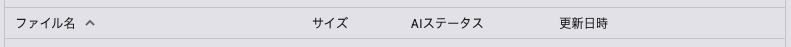
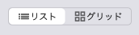

|
ailia DX Insight 0.9.5
|
サーチまたはドキュメントカテゴリのアプリにおいてファイルビューが表示されます。
ファイルビュー上部に並んでいる項目名をクリックすると、ファイルの並び順が変わります。

「ファイル名」をクリックすると、名前順(A-Z/Z-A)に並びます。
「サイズ」をクリックすると、サイズが大きい/小さい順に並びます。
「AIステータス」をクリックすると、インデックス登録済/未登録で並びます。
「更新日時」をクリックすると、ファイルの更新日時の新しい/古い順に並びます。
ファイルビューの右上にある表示モードボタンをクリックすると、ファイルの表示方法（リスト表示/グリッド表示）を変えることができます。
グリッド表示では、画像ファイルのサムネイルがグリッド状に並びます。

頻繁に開くフォルダをブックマークに追加することができます。
この操作ではフォルダ本体の削除は行われません。